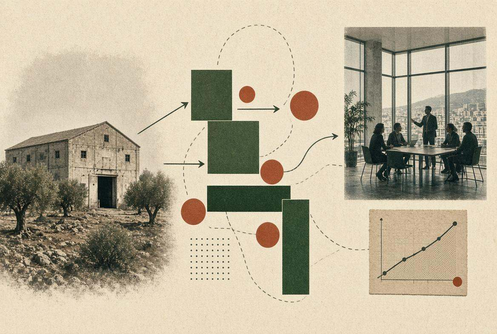

1. Il vuoto
Dove processo, prodotto o filiera si ferma. Lo scriviamo in un use case, non in un tema da convegno.
Open innovation
Scouting, programma, PoC o integrazione. Non una vetrina di pitch. Trovamo startup che coprono un vuoto vostro e le portiamo a uno stadio in cui potete farle entrare.
Parla di un programma
Dove processo, prodotto o filiera si ferma. Lo scriviamo in un use case, non in un tema da convegno.
Scouting di startup complementari. Non competitor in vetrina.
KPI, sprint, PoC. Owner lato azienda e lato startup.
Fit o no. Se sì, operations deve poterlo digerire.
2025–oggi
Bio-Based Innovation Outpost a Porto Torres. Promosso da Eni Joule, Fondazione di Sardegna, Innois e BF Educational. Operato con Zest. Startup abbinate a partner industriali per PoC in contesti produttivi reali.
2022
Realizzato con Growens (Euronext Growth Milan) e CREA — Università di Cagliari. Centro di R&S digitale che ospita la sede locale di Growens: talenti, percorsi professionali, un’impresa che si radica in città.
Pitch Day, luglio 2026
Otto progetti in PoC Design, quattro passati alla fase operativa: Alkelux con Eni Joule su materie plastiche ad attività antimicrobica, Kerline su ingredienti bio-based dalla lana di scarto, BeNewtral su calcestruzzo a basso impatto ambientale, Lebiu su una soletta adattiva con Digital Uniforms. Partner tecnico Versalis, con Sardegna Ricerche, UNISS, UNICA, Confindustria Sardegna e Coldiretti Sardegna.